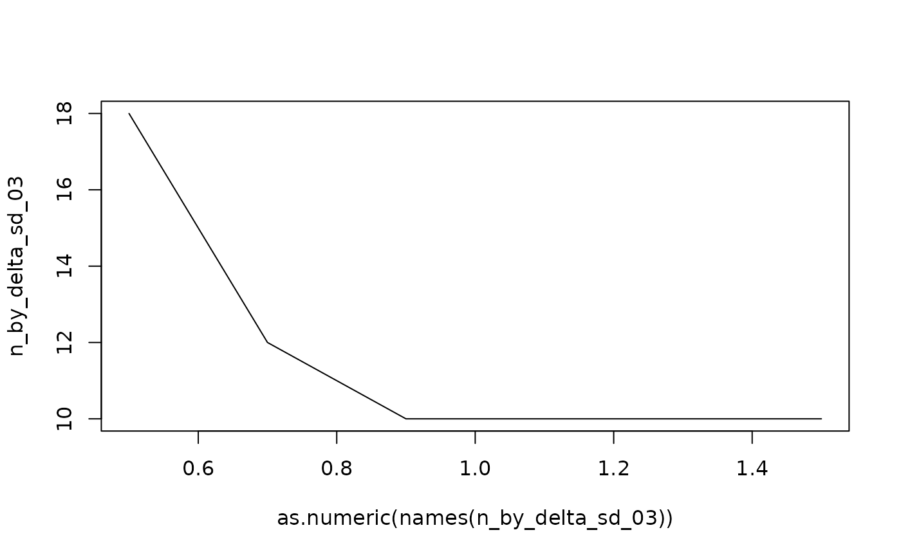

FindTarget functions takes as input an array (typically of type
power_array), e.g., n by effect size, containing at each crossing the
power. The function then searches along one dimension (say n) for a value
(say, power) of at least (or at most) a chosen target value (say, a power of
at least 90%). This is done for each combination of levels of the other
dimension(s) (say, effect size by SD).
Usage
FindTarget(
power_slice,
target = 0.9,
minimal_target = TRUE,
par_to_search = "n",
find_min = TRUE,
method = "step"
)Arguments
- power_slice
An array, most commonly of class
power_array, possibly the result of taking a slice of an object of classpower_arrayusingarray_sliceror the power_array []-indexing method.- target
The required value in the power_slice (e.g., .9, if the values represent power)
- minimal_target
Is the target a minimum (e.g., the power) or a maximum (e.g., the size of a confidence interval)
- par_to_search
Which parameter should be searched to achieve the required target. In the typical power analysis case, this is n.
- find_min
If TRUE, the lowest value of par_to_search is found that yields a value that meets the target. This is typical for n in a sample size estimation, where one searches the lowest n to achieve a certain power. For, e.g. the variance, one would however search for the maximum where the target power can still be achieved.
- method
How is the required
par_to_searchto achievetargetfound. Either'step': walking in steps alongpar_to_searchor'lm': Interpolating assuming a linear relation betweenpar_to_searchand(qnorm(x) + qnorm(1 - 0.05)) ^ 2. Setting 'lm' is inspired on the implementation in the sse package by Thomas Fabbro.
Value
Returns an array or vector: containing the value that is found for the par_to_search (say, n) meeting the target following above criteria (say, the lowest n for which the power is larger than .9), for each crossing of the levels of the other dimensions (say, delta, SD).
Details
By default, the power_slice is searched along the dimension n
(par_to_search), searching for the lowest value (find_min = TRUE)
where the array contains a value of at least (minimal_target = TRUE)
.9 (the target), thus finding the minimal sample size required to
achieve a power of 90%. These arguments may seem a bit confusing at first,
but they allow for three additional purposes:
First, the implementation also allows to search for a value that is at
most the target, by setting minimal_target to FALSE. This may
be used, for example, when the aim is to find a sample size yielding a
confidence interval that is not bigger than some maximum width.
Second, the implementation allows to search along another named dimension of the power_slice than n.
Third, the implementation allows to search for a certain target to be achieved by maximizing (find_minimum = FALSE) the parameter on the searched dimension. This may be used, for example, when the aim is to find the maximum standard deviation at which a study's power is still acceptable.
FindTarget may most often be implicitly called inside
Example, PowerPlot or GridPlot.
Examples
## ============================================
## A basic power analysis example:
## ============================================
sse_pars = list(
n = seq(from = 10, to = 60, by = 2),
sig_level = seq(.01, .1, .01),
delta = seq(from = 0.5, to = 1.5, by = 0.2), ## effect size
sd = seq(.1, .9, .2)) ## Standard deviation
PowFun <- function(n, sig_level, delta, sd){
ptt = power.t.test(n = n/2, delta = delta, sd = sd,
sig.level = sig_level)
return(ptt$power)
}
power_array = PowerGrid(pars = sse_pars, fun = PowFun, n_iter = NA)
summary(power_array)
#> Object of class: power_array
#>
#> Range of values: [0.03, 1]
#> Evaluated at:
#> n 10, 12, 14, 16, 18, 20, 22, 24, 26, 28, 30, 32,
#> n 34, 36, 38, 40, 42, 44, 46, 48, 50, 52, 54, 56,
#> n 58, 60
#> sig_level 0.01, 0.02, 0.03, 0.04, 0.05, 0.06, 0.07, 0.08,
#> sig_level 0.09, 0.1
#> delta 0.5, 0.7, 0.9, 1.1, 1.3, 1.5
#> sd 0.1, 0.3, 0.5, 0.7, 0.9
## We can use Example so find the required sample size, but only for one example:
Example(power_array,
example = list(delta = .7, sd = .7, sig_level = .05),
target = .9)
#> ================================================
#> To achieve the target of at least 0.9 assuming
#> delta = 0.7
#> sd = 0.7
#> sig_level = 0.05,
#> the minimal required n = 46
#> ------------------------------------------------
#> Description: Method "step" was used to find the
#> lowest n in the searched grid that yields a
#> target (typically power) of at least 0.9.
#> ================================================
## If we want to see the required sample size for all delta's, we can use
## FindTarget. Get the minimal n needed for achieving a value of 0.9, at sd =
## .3:
n_by_delta_sd_03 = FindTarget(power_array[, sig_level = '0.05', , sd = '0.3'],
par_to_search = 'n',
target = .9)
n_by_delta_sd_03
#> 0.5 0.7 0.9 1.1 1.3 1.5
#> 18 12 10 10 10 10
## just as an illustration, a figure (that can be much more aestetically made
## using PowerPlot)
plot(as.numeric(names(n_by_delta_sd_03)),
n_by_delta_sd_03, type = 'l')

## =================================
## Higher dimensionality
## =================================
## The function works also for higher dimensionality:
n_by_delta_sd = FindTarget(power_array,
par_to_search = 'n',
target = .85)
## what is the minimum n to achieve .85 for different values of delta, sd, and sig_level:
print(n_by_delta_sd)
#> , , sd = 0.1
#>
#> delta
#> sig_level 0.5 0.7 0.9 1.1 1.3 1.5
#> 0.01 10 10 10 10 10 10
#> 0.02 10 10 10 10 10 10
#> 0.03 10 10 10 10 10 10
#> 0.04 10 10 10 10 10 10
#> 0.05 10 10 10 10 10 10
#> 0.06 10 10 10 10 10 10
#> 0.07 10 10 10 10 10 10
#> 0.08 10 10 10 10 10 10
#> 0.09 10 10 10 10 10 10
#> 0.1 10 10 10 10 10 10
#>
#> , , sd = 0.3
#>
#> delta
#> sig_level 0.5 0.7 0.9 1.1 1.3 1.5
#> 0.01 24 14 10 10 10 10
#> 0.02 20 12 10 10 10 10
#> 0.03 18 12 10 10 10 10
#> 0.04 18 10 10 10 10 10
#> 0.05 16 10 10 10 10 10
#> 0.06 16 10 10 10 10 10
#> 0.07 14 10 10 10 10 10
#> 0.08 14 10 10 10 10 10
#> 0.09 14 10 10 10 10 10
#> 0.1 12 10 10 10 10 10
#>
#> , , sd = 0.5
#>
#> delta
#> sig_level 0.5 0.7 0.9 1.1 1.3 1.5
#> 0.01 56 32 20 16 12 10
#> 0.02 50 26 18 14 10 10
#> 0.03 44 24 16 12 10 10
#> 0.04 42 22 16 12 10 10
#> 0.05 38 22 14 10 10 10
#> 0.06 36 20 14 10 10 10
#> 0.07 36 20 12 10 10 10
#> 0.08 34 18 12 10 10 10
#> 0.09 32 18 12 10 10 10
#> 0.1 32 18 12 10 10 10
#>
#> , , sd = 0.7
#>
#> delta
#> sig_level 0.5 0.7 0.9 1.1 1.3 1.5
#> 0.01 NA 56 36 26 20 16
#> 0.02 NA 50 32 22 18 14
#> 0.03 NA 44 28 20 16 12
#> 0.04 NA 42 26 18 14 12
#> 0.05 NA 38 24 18 14 12
#> 0.06 NA 36 24 16 12 10
#> 0.07 NA 36 22 16 12 10
#> 0.08 NA 34 22 16 12 10
#> 0.09 60 32 20 14 12 10
#> 0.1 58 32 20 14 12 10
#>
#> , , sd = 0.9
#>
#> delta
#> sig_level 0.5 0.7 0.9 1.1 1.3 1.5
#> 0.01 NA NA 56 40 30 24
#> 0.02 NA NA 50 34 26 20
#> 0.03 NA NA 44 32 24 18
#> 0.04 NA NA 42 28 22 18
#> 0.05 NA NA 38 28 20 16
#> 0.06 NA 60 36 26 20 16
#> 0.07 NA 56 36 24 18 14
#> 0.08 NA 54 34 24 18 14
#> 0.09 NA 52 32 22 16 14
#> 0.1 NA 50 32 22 16 12
#>